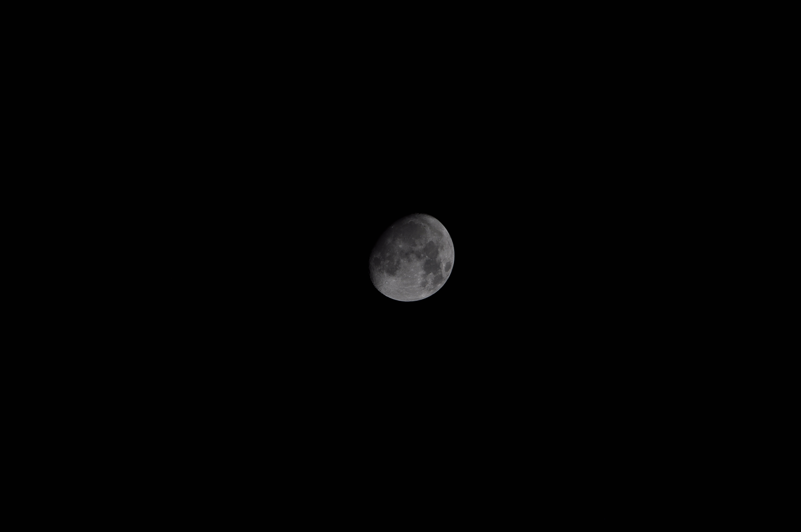

Membina Visi Digital Anda Menjadi Realiti
Selamat datang ke Mirul Studio, di mana inovasi bertemu dengan
kreativiti. Kami adalah pasukan pembangun web, pereka, dan jurugambar
yang bersemangat untuk mengubah idea anda menjadi pengalaman digital
yang luar biasa dan berfungsi tinggi.
Terokai portfolio kami untuk melihat bagaimana kami menggabungkan
teknologi terkini dengan reka bentuk yang menawan untuk memberikan
hasil yang memberi impak.
Lihat Portfolio
Project-project Terkini 💡
Membina sebuah 'Cyberdeck' mudah alih menggunakan Raspberry Pi 4. Cyberdeck ialah komputer kustom yang dibina untuk tujuan spesifik, selalunya dengan reka bentuk futuristik. Projek ini menggunakan Raspberry Pi, sejenis 'Single-Board Computer' (SBC) - komputer lengkap pada satu papan litar - untuk mencipta peranti yang kompak dan berkuasa.
#Raspberrypi
#Terminal
Lihat Lagi
Projek: Raspberry Pi zero 2w server
Projek ini memanfaatkan Raspberry Pi Zero 2 W yang sangat ringkas dan berdaya rendah untuk membangun sebuah server mini. D3.js.
#Raspberrypi
#Linux
#Server
Projek 3: Laman Web
Reka bentuk semula laman web team dengan penekanan pada SEO dan kelajuan muatan yang optimum, dihoskan dengan cekap menggunakan Vercel.
#HTML5
#SEO
#Vercel
Meneroka intipati kehidupan urban melalui lensa fotografi, setiap imej merakam naratif unik dari jalanan yang sibuk dan detik-detik spontan yang tidak dijangka.
#Photography
#Street
#Art
Lihat Lagi
Projek: ESP32 CCTV
Membina sebuah CCTV kecil menggunakan ESP32 dengan sambungan WiFi. Projek ini membolehkan pemantauan video secara langsung melalui rangkaian tempatan.
#ESP32
#CCTV
#WiFi
Galeri Gambar

Momen indah yang dirakam, penuh dengan kenangan manis dan kehangatan.
Street Shooting Photography
Meneroka intipati kehidupan urban melalui lensa fotografi, setiap imej merakam naratif unik dari jalanan yang sibuk dan detik-detik spontan yang tidak dijangka.
Lihat lebih banyak hasil kerja kami di laman web rasmi:
Lawati Mirul Studio Official Website
Ikuti Kami di Media Sosial
Ikuti Kami di Media Sosial